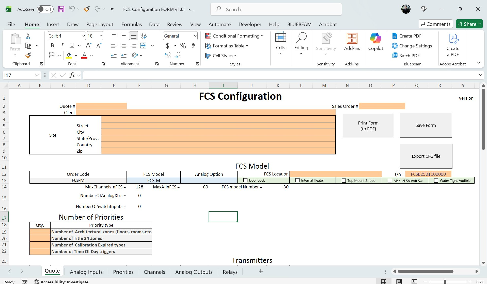
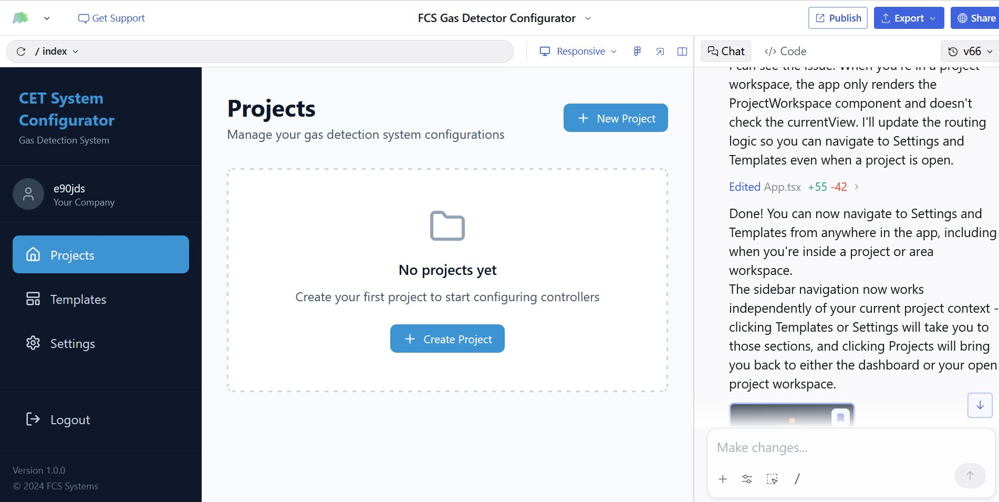
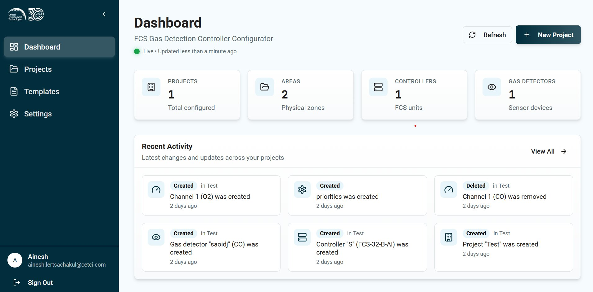
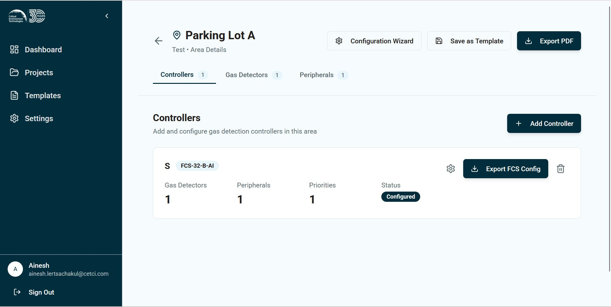

Productizing system configuration to accelerate service, quoting, and delivery — then taking over full development, rebuilding the UI for three user personas, and validating every change against physical hardware.
Controller configurations at CET were built inside a brittle Excel macro workbook. Large configurations took nearly two hours of manual engineering time. Hardware constraints on what an FCS controller could support lived in engineers' heads, not in the tool. Every error was a support ticket.

I scoped and managed an external developer to build a validated web configurator integrated with Microsoft Business Central. Key architecture decision: keep config metadata out of the ERP core to avoid bloat, while keeping BC as the source of truth for products, pricing, and fulfillment.
I also used MagicPatterns for iterative UX scoping before development — rapid prototyping of the interface alongside ERP data modeling. Excel was deprecated on launch day.

I took over the Lovable codebase and rebuilt the UI for three distinct personas:
I personally built and maintained the Supabase backend and Business Central integration.


The configurator's critical output is a .cfg file that programs a physical FCS controller. A wrong file means a misconfigured controller in the field.
Every change I shipped — a UI tweak, a Business Central sync update, a bug fix — was ultimately validated against the physical controller a technician would install in the field. That's the standard I held it to.